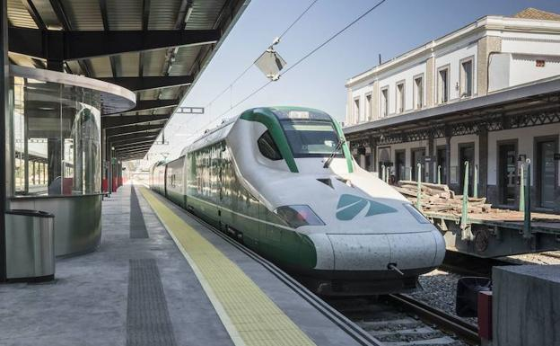

Estación de Tren
Volver

El AVE llega a Granada
Estación de Trenes
La Estación de tren y AVE de Granada, conocida también como estación de
tren andaluces, es la estación ferroviaria que brinda servicio a la ciudad
española de Granada. Hasta hace poco tiempo solo tenía servicio de trenes
convencionales, pero desde junio del año 2019, da servicios de líneas AVE,
como el AVE Madrid Granada